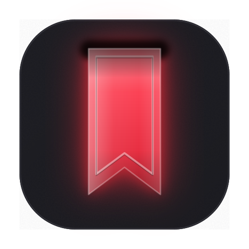
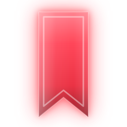

Ground
Матовый графит без синевы. Под Mica окно становится полупрозрачным, и этот тон — подложка, если Mica недоступен.

Личное хранилище закладок. Папки с произвольной вложенностью, карточки с превью, запуск в нужном профиле браузера. Один пользователь, одна машина, никакого сервера.

mark.svgЗакладка-ленточка из красного стекла, вставленная в щель матовой тёмной плитки, с мягким свечением. Буквально и узнаваемо: это про закладки, и ничего расшифровывать не надо.
С плиткой — установщик, меню Пуск, рабочий стол. Без плитки (mark.svg) — интерфейс и документы. В трее и на 16 px — сплошная лента без свечения и фаски (tray.svg), иначе знак превращается в пятно.
Менять цвет ленты, добавлять к знаку метафоры и второй смысл, класть на пёстрое фото без плитки, растягивать, поворачивать, рисовать блики и отражения.
Матовый графит без синевы. Под Mica окно становится полупрозрачным, и этот тон — подложка, если Mica недоступен.
Карточки, панели, дерево папок. Почти непрозрачная заливка поверх Mica.
Выбранные строки, поля ввода, поднятые поверхности.
Границы и разделители. Никогда не текст.
Единственный цвет действия: кнопка «Добавить», активный узел дерева, фокус, свечение. В иконке лента насыщеннее — #FF3347, в интерфейсе тон чуть светлее ради контраста текста.
Текст на залитой акцентом кнопке.
Светлая тема: #17171A и #56565E, контраст 17.89 и 7.27.
Мёртвая ссылка и разрушающие действия. Акцент тоже красный, поэтому ошибку несёт глиф и подпись, а не оттенок. Светлая: #8E1F19, #8A6100.
| Токен | Тёмная | Светлая | Где |
|---|---|---|---|
--accent-soft | rgba(255,95,87,.16) | rgba(198,43,36,.10) | Заливка активного узла, чипа, выделения |
--glow / --glow-strong | rgba(255,95,87,.28) / .45 | .18 / .26 | box-shadow blur 12–20 px, только у акцента |
--r-ctl / --r-card / --r-pill | 7 px / 10 px / 999 px | Контролы, карточки и папки, чипы | |
--shadow-surface | 0 10px 26px rgba(0,0,0,.5) | Нейтральная тень модалок и меню, без цвета | |
Системный Mica через window-vibrancy: композитор Windows рисует стекло сам, приложение не платит ничего. Без Mica — плотный Ground.
Стекло — редкость, не фон каждого блока. Один–три акцента на экране: лента и кнопка «Добавить», активный узел дерева, карточка под курсором. Свечение — композитный box-shadow, фаска — border-image или conic-gradient через псевдоэлемент, объём — двойная inset-тень. Рефракция краёв ленты — SVG feDisplacementMap с картой, посчитанной один раз.
Гауссов backdrop-filter: blur() на больших областях, блики и отражения, shimmer-развёртки, three.js и WebGL ради декора, постоянные rAF-циклы в покое. По prefers-reduced-transparency и prefers-reduced-motion декоративные слои выключаются.
Manrope, переменный, самохостинг. Запасной — Segoe UI Variable Text. Заголовки не кричат: 16/700 максимум внутри приложения.
Капс с разрядкой, кикеры-надписи над заголовками, моно в подписях и счётчиках. Это приметы прошлой версии, они ушли вместе с палитрой.
Потолок 250 мс. Выход — две трети от входа. Никакого увеличения по наведению; наведение — свечение и фаска.
prefers-reduced-motion уважается: длительности уходят в ноль, состояния переключаются мгновенно.
View Transitions только на контейнерные кроссфейды. Имя перехода на каждой карточке даёт коллизии при фильтрации и рвёт анимацию.
| Файл | Назначение |
|---|---|
logo/app-icon.svg · app-icon-512.png | Иконка приложения: плитка, щель, лента, свечение. Источник для npm run tauri icon |
logo/mark.svg | Лента со свечением без плитки — интерфейс и документы |
logo/mark-mono.svg | Одноцветная лента, наследует currentColor |
logo/favicon.svg | Плоская лента для мелких размеров |
logo/tray.svg · src-tauri/icons/tray.png | Иконка трея: лента без плитки и свечения, 32 px |
logo/wordmark.svg | Только начертание названия |
logo/lockup.svg | Лента и название вместе, горизонтально |
logo/folder.svg · folder-{16..256}.png · folder.ico | Иконка папки проекта в проводнике, применена через desktop.ini |